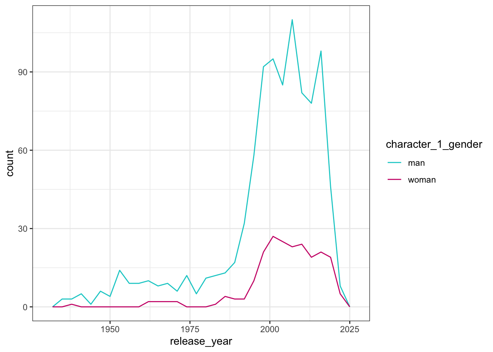
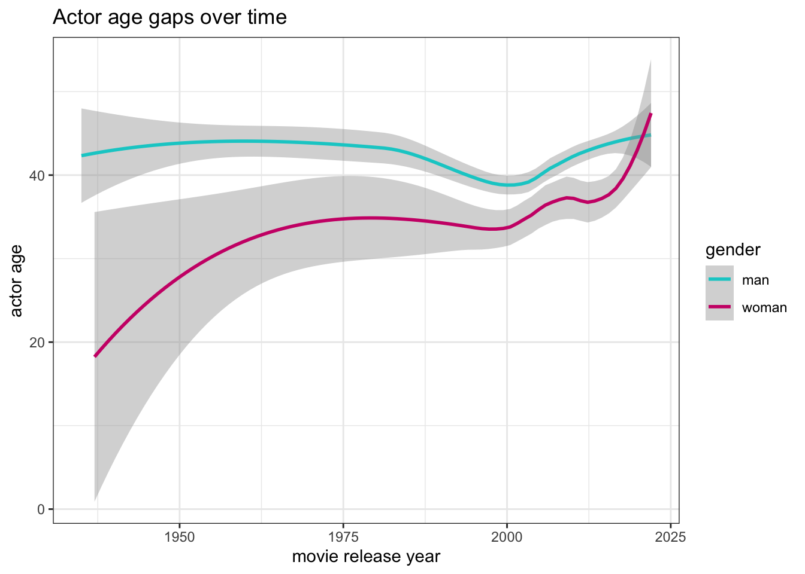
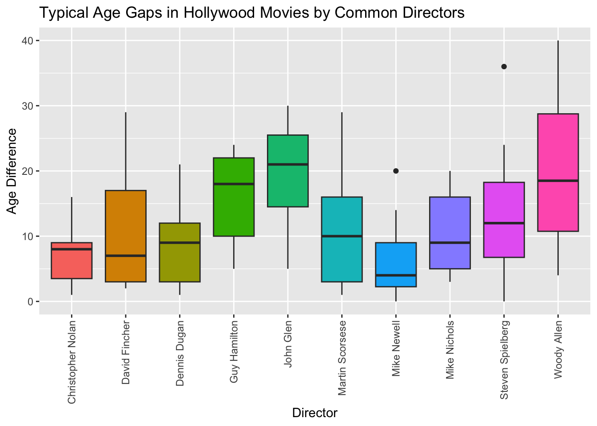

Attaching package: 'dplyr'The following objects are masked from 'package:stats':
filter, lagThe following objects are masked from 'package:base':
intersect, setdiff, setequal, union
Attaching package: 'dplyr'The following objects are masked from 'package:stats':
filter, lagThe following objects are masked from 'package:base':
intersect, setdiff, setequal, unionYour write-up should consist of three parts:
Brief introduction to the dataset. You may repeat some of the information about the dataset provided in the introduction to the dataset on the TidyTuesday repository, for instance. Imagine that your project is a standalone document and the grader has no prior knowledge of the dataset.
Hollywood Age Gap
We are using the Hollywood Age Gap dataset, compiled by Lynn Fisher, a web designer. It showcases the age differences between love interests in a variety of Hollywood films between 1935 and 2022. The dataset lists movies featuring romantic couples as observations, and their respective release years, actor names, birthdates, age gaps, and genders. There are 12 variables, and 1177 observations.
The dataset is not a comprehensive list of movies by director or by actor; rather, users suggest movies by tweeting or otherwise contacting Lynn Fisher, who maintains the website and dataset.
The variables we will use are ‘director,’ a character variable of the director of each film, ‘release_year,’ a numeric column with range 1930-2030 listing the release year of each film, ‘age_difference,’ a numeric column with range 0-55 of each calculated age gap, ‘character_1_gender’ and ‘character_2_gender,’ which are character variables listing the gender of each film character in the relationship, and ‘actor_1_age’ and ‘actor_2_age,’ numerical columns with ranges 15-85 and 15-70 respectively, which list the age of each actor in the film relationship.Why we chose it: We chose this dataset because we were intrigued by the cultural representation of romantic relationships in cinema and how they create social norms and dynamics particularly in regards to gendered expectations.
Questions:
Are men typically the older person in the age gap, and has this changed over time?
Are certain directors more likely to have larger age gaps in their films than others?
Our plan :
Create a variable for average mean age gap between actors for each director
Create a visualization contrasting age gaps in different movies by gender over time
Create a visualization showing average age gap for each director with several movies on the list
Gender Dynamics in age gaps:
Are men typically the older person in the age gap, and has this changed over time?
This question was posed to try and understand the gendered aspects of age gaps in movies and the patterns of gender and age that appeared in the data. To answer this question we primarily used variables of character gender and actor age. Since the data frame was organized in such a way that the older actor in each relationship was sorted into the column actor_1_age and the younger actor in the relationship was sorted into the column actor_2_age we had a much easier time visualizing the way gender interacted with which actor was older in the age gap. We used the movie’s release date in order to plot the trends over time. We used all observations to address this question.
Our first plot will be a frequency plot showing the frequency by gender of characters who are the elder in the age gap. This plot will only record the actors who are older and will be color mapped by gender. We will use this plot to determine if the number of men who are older is significantly higher than the number of women.
Our second plot provides context for how old the older actor in the relationship is by gender. The second graph will be a smooth conditional means plot showing actor age over time, we will color map gender. This will show how old the older actors are in the relationship, and demonstrate how much older the men who are the elder in the age gap are than the women who are the elder in the age gap.
custom_colors <- c("man" = "cyan3", "woman" = "deeppink3", "Other" = "gray")
older_actors <- ggplot(age_gaps, aes(release_year, color = character_1_gender))+
geom_freqpoly() +
scale_color_manual(values = custom_colors) +
theme_bw()
older_actors`stat_bin()` using `bins = 30`. Pick better value with `binwidth`.
custom_colors <- c("man" = "cyan3", "woman" = "deeppink3", "Other" = "gray")
age_diff_plot <- ggplot(age_gaps) +
geom_smooth(aes(x= release_year, y = actor_1_age, color = character_1_gender)) +
scale_color_manual(values = custom_colors) +
labs( title = "Actor age gaps over time" ,
x = "movie release year",
y = "actor age",
color = "gender") +
theme_bw()
age_diff_plot`geom_smooth()` using method = 'loess' and formula = 'y ~ x'
From the first plot we could infer that men have typically been the older of the two actors in the relationship over time because the frequency of the older actor being a man was higher across time than the older actor being a woman.The large spike in both lines on the plot corresponds to an increase in the number of movies in the 2000s. With this increase the disparity between the number of older actors being a man and the number of older actors being a woman increased. This plot confirms our suspicions that the age gaps are usually structured along gendered lines wherein the man is the older in the relationship. It is worth noting that this data does include men and women who were the older in non heterosexual relationships. Because the number of observations of homosexual relationships was slight compared to the rest of the data we decided not to exclude them, since we did not anticipate them having a major impact on the visualizations.
The second plot shows the mean age of the older actor over time. From it we can determine that amongst actors who were older the mean age of men has been consistently higher than that of women. This disparity has gone down over time with the mean age of older women getting closer to that of men. This suggests that even in relationships where the woman is older, women in these movies are typically portrayed by younger actresses than men. This plot suggests a potential double standard of acceptable age for men versus women portraying romantic roles on screen. However this gap between mean ages is getting smaller over time.Age Gaps and Directors
Are certain directors more likely to have larger age gaps in their films than others?
With this question, we are investigating whether specific directors have a tendency to have higher age gaps between characters in their films than others. To do this, we need to use the variables of director, age difference between actors, and create a variable for mean age difference by director.
We are interested in this question because it will shed light on systemic gendered expectations in Hollywood and whether those expectations are particularly fostered by certain directors, or whether they are equal across directors. We will only be addressing ten directors- those with the most movies listed- since the dataset is very large and it will be impossible to compare all directors effectively. Additionally, by focusing on the directors with the most movies listed, we increase the likelihood that they are household names to our readers, making the data more relevant.
We used all observations to address this question.
To answer this question, we will make a boxplot of the top ten directors and the summary statistics of age differences in their movies. This will help us clearly see the distribution of age gaps- do certain directors have a wide variety of age gaps, for instance?- as well as the median age gap for each director. It will also allow us to see the minimum and maximum age gap for each director, which will allow us to see outliers or extreme gaps for certain movies.
For our second figure, we will print a table of the mean age gap by director, since we are working with a small dataset and it is important to see the mean as well as the summary statistics exhibited by the boxplot. We can then compare the mean age gap for each director with their boxplot to get a better idea of how their mean age gap compares with their distribution. We will also print a table with the min, 1st quartile, median, 3rd quartile, and maximum for the whole dataset, as it will help provide averages that we can compare to individual directors’ boxplots.
movies_1 <- read_csv("https://raw.githubusercontent.com/rfordatascience/tidytuesday/master/data/2023/2023-02-14/age_gaps.csv", show_col_types = FALSE)
movies_2 <- movies_1 %>% count(director)%>%
arrange(desc(n))
movies_1 <- movies_1 %>%
group_by(director) %>%
mutate(average_age_gap = mean(`age_difference`)) director_plot <- ggplot(movies_usable, aes(x = director, y = age_difference, fill= director)) +
geom_boxplot() +
labs(title = "Typical Age Gaps in Hollywood Movies by Common Directors",
x = "Director",
y = "Age Difference")+ theme(axis.text.x = element_text(angle = 90, vjust = 0.5, hjust=1))+
theme(legend.position = "none")#no legend bc it's obvious from axis labels
director_plot
Min. 1st Qu. Median Mean 3rd Qu. Max.
0.00 5.00 13.00 13.59 20.00 40.00 movies_usable_mean <- movies_usable %>%
group_by(director) %>%
summarize(average_age_gap = mean(`age_difference`), n = n()) %>%
arrange(desc(average_age_gap))
print(movies_usable_mean)# A tibble: 10 × 3
director average_age_gap n
<chr> <dbl> <int>
1 Woody Allen 20.1 20
2 John Glen 19.9 15
3 Guy Hamilton 16.2 9
4 Steven Spielberg 13.5 10
5 Martin Scorsese 10.9 13
6 David Fincher 10.6 9
7 Mike Nichols 10.4 9
8 Dennis Dugan 8.67 9
9 Christopher Nolan 7.14 7
10 Mike Newell 6.7 10From our boxplot, we can see that Woody Allen, John Glen, and Guy Hamilton have the largest age gaps. We can also see that Woody Allen also has one of the widest ranges of age gaps, which may be explained by the fact that he has the most movies of any director in our dataset (and, while he does have the highest mean age gap of any director, as seen below, he does not have the highest median, which may also be explained by the size of the dataset). We can also see that several of the medians hover around 10 years, and all directors have some data within that range.
The table of age gap mean by director also confirms Woody Allen, John Glen, and Guy Hamilton as having the highest average age gaps of the set of directors. One might also note that some contemporary directors, such as Christopher Nolan, have smaller age gaps; however, this is not a hard and fast rule, and would need to be confirmed through further research analyzing the time period in which each director is active. It could explain the mean trend, however.
It would be interesting to examine if the year the movie is made or the age of the director has an effect on the age gap of the film, since that is not a question we can answer with this plot.